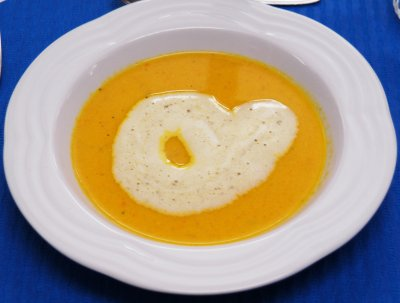

| Zutaten für 4 Personen: | |
| 3 grosse | Rüebli |
| 1 | kleine Zwiebel |
| 1 Kl | Butter |
| 5 dl | Gemüsebouillon |
| 1 dl | Rahm |
| Salz, Pfeffer | |
| 2 Scheiben | Toastbrot |
| 1 El | Olivenöl |
| 1 Kl | getrockneter Oregano |
| 1 dl | Vollrahm |
| 1.5 El | fertige Pestosauce |
Rüebli waschen, schälen, in Würfel schneiden.
Zwiebel fein schneiden.
Bouillon zubereiten.
Butter in einer hohen Pfanne die Butter schmelzen lassen.
Rüebli und Zwiebel andünsten.
Mit Bouillon ablöschen, zugedeckt weich kochen. (ca. 15 Minuten).
Danach fein pürieren.
Rahm zufügen, aufkochen und abschmecken.
Die Suppe in vorgewärmte Schalen anrichten.
Garnitur:
Aus den zwei Scheiben Toastbrot kleine Herzen ausstechen, in eine Schüssel geben.
Olivenöl darüber verteilen.
Getrockneter Oregano darüber verteilen.
Mit Salz und Paprika würzen.
Die Brotwürfeli in einer Bratpfanne leicht anbräunen, auf Küchenpapier übriges Fett abtropfen lassen. Auf die Suppe legen.
Den Vollrahm mit dem Mixer fest schlagen.
Die fertige Pestosauce mit dem Gummischaber darunter ziehen, in einen Spritzsack abfüllen und vor dem Servieren eine Herzform auf die Suppe drapieren.
Kochkurs bei Patricia Krummenacher, September 2007
Hat sehr gut geschmeckt, RE, 27.10.2007